Week 7 函數作圖（Curve Sketching）
AP Calculus I（115 學年）Lecture Note 7 教學與題解
講義筆誤讀講義時請自己改正四處：
- p.55 隱函數線性逼近例題 (c)：$\dfrac{d^2y}{dx^2}=\dfrac{119}{18}$ 應為 $\dfrac{119}{108}$。仍然大於 $0$，結論「低估」不變（題 10）。
- p.59 $\dfrac{\cos x}{2+\sin x}$ 例題：$f''\gt0\iff\cos x\lt0\iff\dfrac\pi2\lt x\lt\dfrac{2\pi}{3}$，兩處 $\dfrac{2\pi}{3}$ 都應為 $\dfrac{3\pi}{2}$，凹口向上的區間是 $\left(\frac\pi2,\frac{3\pi}2\right)$（題 17）。
- p.61 隱函數作圖例題：求 $\dfrac{dy}{dx}$ 時括號說「因 $y=-x$ 為漸近線，故 $x+y$ 這一項可消掉」。實際上約掉的是 $x-y$，理由是曲線上 $x\neq y$（題 23）。
- p.62 梯度下降：「向 $f'(x_n)$ 的方向走 $t$ 單位」應為「往 $f'(x_n)$ 的反方向走 $t\,|f'(x_n)|$」，公式 $x_{n+1}=x_n-tf'(x_n)$ 本身沒錯（題 25）。
這一週的目標是：給一個函數，不靠電腦也能畫出大致長相。工具全部是前幾週學過的東西，一階導數管升降，二階導數管彎的方向，極限管漸近線。講義把整套流程縮寫成 D-I-S-P-A-D-D-D，7.3 節會整理。
7.1 一階導數：遞增遞減與極值
上週用均值定理證過：斜率正的地方函數往上走，斜率負的地方往下走。
定理 7.1.1（一階導數判別法 Ver.1）$f$ 在 $[a,b]$ 連續、$(a,b)$ 可微。
- 某區間上 $f'(x)\ge0$，則 $f$ 在該區間遞增；$f'(x)\gt0$ 則嚴格遞增。
- 某區間上 $f'(x)\le0$，則 $f$ 在該區間遞減；$f'(x)\lt0$ 則嚴格遞減。
極大極小
全域（global、absolute）最大值是整個定義域裡最高的那個值；局部（local）極大值只要求比「附近」的值都大，像山頂，不一定是最高的那座山。
定義 7.1.1$f:D\to\mathbb R$，$a,b\in D$。
- $f(a)\ge f(x)$ 對所有 $x\in D$ 成立：$f(a)$ 是全域最大值；$\le$ 則是全域最小值。
- $f(b)\ge f(x)$ 對所有 $b$ 附近的 $x$ 成立：$f(b)$ 是局部極大值；$\le$ 則是局部極小值。
定義 7.1.2$f'(c)=0$ 或 $f'(c)$ 不存在的點 $x=c\in D$ 叫臨界點（critical point）。
直覺：在山頂或谷底，切線一定是水平的（如果有切線的話）。所以找極值只要去臨界點找。但反過來不一定成立，切線水平不代表是山頂，還要看 $f'$ 有沒有變號。
定理 7.1.2（一階導數判別法 Ver.2）$f$ 可微。
- （Fermat）$f$ 在 $x=c$ 有局部極值，則 $f'(c)=0$。
- 反過來，$c$ 是臨界點時：$f'$ 經過 $c$ 由負變正，$c$ 是局部極小；由正變負，$c$ 是局部極大。
題 1$f(x)=x^3$。說明 $f'(0)=0$，但 $x=0$ 既不是局部極大也不是局部極小。
$f'(x)=3x^2$，$f'(0)=0$，所以 $0$ 是臨界點。
但 $x\lt0$ 時 $f(x)\lt0=f(0)$，$x\gt0$ 時 $f(x)\gt0=f(0)$。$0$ 的任何附近都同時有比 $f(0)$ 大與小的值，所以不是極值。用定理 7.1.2 看：$f'(x)=3x^2$ 在 $0$ 兩側都是正的，沒有變號。
$f'(c)=0$ 只是極值的必要條件，不是充分條件
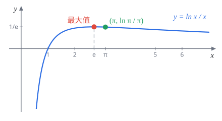
題 2$e^\pi$ 與 $\pi^e$ 哪個大？（提示：考慮 $f(x)=\dfrac{\ln x}{x}$，$x\gt0$。）
兩個數都是正的，比大小可以改比 $\ln$：$\ln e^\pi=\pi$，$\ln\pi^e=e\ln\pi$。兩邊同除以 $e\pi$，等於在比
$$\frac{\ln e}{e}\quad\text{與}\quad\frac{\ln\pi}{\pi}$$這正是提示的 $f(x)=\dfrac{\ln x}{x}$ 在 $x=e$ 與 $x=\pi$ 的值。
$$f'(x)=\frac{\frac1x\cdot x-\ln x}{x^2}=\frac{1-\ln x}{x^2}$$$0\lt x\lt e$ 時 $\ln x\lt1$，$f'\gt0$；$x\gt e$ 時 $f'\lt0$。所以 $f$ 在 $x=e$ 有最大值，且在 $(e,\infty)$ 嚴格遞減。$\pi\gt e$，故 $f(\pi)\lt f(e)$：
$$\frac{\ln\pi}{\pi}\lt\frac1e\ \Longrightarrow\ e\ln\pi\lt\pi\ \Longrightarrow\ \pi^e\lt e^\pi$$$e^\pi\gt\pi^e$（數值上 $e^\pi\approx23.14$，$\pi^e\approx22.46$）
閉區間上的全域極值
定理 7.1.3（極值定理 Ver.2）$f$ 在 $[a,b]$ 連續，則
- 全域最大值與最小值一定存在；
- 它們只會出現在臨界點或端點 $a,b$。
道理很簡單：最大值如果在區間內部，那裡就是局部極大，由 Fermat 定理必是臨界點；不在內部就只能在端點。講義建議背下這個結論，多變數微積分時一模一樣。
解題套路閉區間找最大最小值：
- 求 $f'$，找出區間內的所有臨界點。
- 把臨界點與兩個端點全部代進 $f$。
- 最大的是最大值，最小的是最小值。不用判斷是極大還是極小。
極值定理看圖很直觀，證明卻很難，它等價於「實數線沒有洞」（實數完備性），屬於高等微積分的內容。這門課只拿來用。
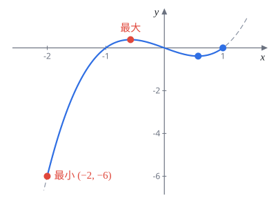
題 3求 $f(x)=x^3-x$ 在 $[-2,1]$ 上的全域最大值與最小值。
$f'(x)=3x^2-1=0$，$x=\pm\dfrac{1}{\sqrt3}$，兩個都在 $[-2,1]$ 裡。
| $x$ | $-2$ | $-\frac{1}{\sqrt3}$ | $\frac{1}{\sqrt3}$ | $1$ |
|---|---|---|---|---|
| $f(x)$ | $-6$ | $\frac{2\sqrt3}{9}\approx0.385$ | $-\frac{2\sqrt3}{9}$ | $0$ |
其中 $f\!\left(-\tfrac1{\sqrt3}\right)=-\dfrac{1}{3\sqrt3}+\dfrac{1}{\sqrt3}=\dfrac{2}{3\sqrt3}=\dfrac{2\sqrt3}{9}$。
最大值 $\dfrac{2\sqrt3}{9}$（在 $x=-\frac{1}{\sqrt3}$），最小值 $-6$（在 $x=-2$）
題 4求 $f(x)=\dfrac{x}{x^2+3}$ 在 $[0,6]$ 上的全域最大值與最小值。（講義答案 $M=\frac{\sqrt3}{6}$，$m=0$）
$f'=0$：$x=\pm\sqrt3$，區間內只有 $\sqrt3$。比較：
$$f(0)=0,\qquad f(\sqrt3)=\frac{\sqrt3}{6}\approx0.289,\qquad f(6)=\frac{6}{39}=\frac{2}{13}\approx0.154$$$M=\dfrac{\sqrt3}{6}$（在 $x=\sqrt3$），$m=0$（在 $x=0$），與講義答案相同
題 5求 $f(x)=2x^3-3x^2-36x$ 在 $[-4,6]$ 上的全域最大值與最小值。（講義答案 $M=108$，$m=-81$）
$f'(x)=6x^2-6x-36=6(x-3)(x+2)$，臨界點 $x=-2,\,3$。
$$\begin{aligned} f(-4)&=-128-48+144=-32\\ f(-2)&=-16-12+72=44\\ f(3)&=54-27-108=-81\\ f(6)&=432-108-216=108 \end{aligned}$$注意最大值在端點 $x=6$，比局部極大 $44$ 還大，所以端點一定要代。
$M=108$（在 $x=6$），$m=-81$（在 $x=3$），與講義答案相同
題 6舉一個在 $[0,1]$ 上有界、但沒有最大值也沒有最小值的函數。（提示：$x\in(0,1)$ 時 $f(x)=x$，$f(0)=f(1)=\frac12$。）
$0\lt f(x)\lt1$，所以有界。$f$ 的值可以任意接近 $1$（取 $x=0.999\ldots$），但永遠到不了 $1$：任何 $f(x_0)$ 都能找到更大的值，所以沒有最大值。同理任意接近 $0$ 但到不了，沒有最小值。
這不違反極值定理，因為 $f$ 在 $x=0$ 與 $x=1$ 不連續。
例如上面的 $f$；重點是讓函數在端點不連續，把最高點和最低點「挖掉」
7.2 二階導數：凹性
$f''$ 是 $f'$ 的導數，也就是斜率的變化率。$f''\gt0$ 代表由左往右看，切線斜率越來越大，圖形往上彎成碗狀，叫凹口向上（concave upward）；$f''\lt0$ 代表斜率越來越小，圖形像倒扣的碗，叫凹口向下（concave downward）。
定義 7.2.1（凹性）在區間 $I$ 上，$f$ 的圖形在所有切線上方，稱凹口向上；在所有切線下方，稱凹口向下。
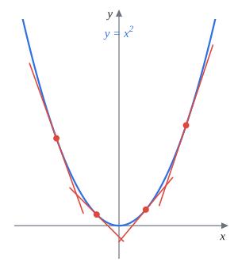
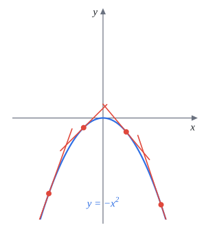
定理 7.2.1在 $I$ 上 $f''\gt0$，則圖形在 $I$ 凹口向上；$f''\lt0$ 則凹口向下。
題 7判斷 $f(x)=x^2$ 與 $g(x)=-x^2$ 的凹性。
$f'(x)=2x$，斜率由左到右從負變正一路變大；$f''(x)=2\gt0$。$g''(x)=-2\lt0$。
$x^2$ 在 $\mathbb R$ 上凹口向上，$-x^2$ 在 $\mathbb R$ 上凹口向下
定義 7.2.2（反曲點）$f$ 在 $x=c$ 連續，且圖形在 $c$ 兩側凹性相反（上變下或下變上），則 $x=c$ 是反曲點（inflection point）。
定理 7.2.2（二階導數判別法）$f$ 二次可微且 $f''$ 在 $c$ 連續。
- $c$ 是反曲點，則 $f''(c)=0$。
- $c$ 是臨界點（$f'(c)=0$）且 $f''(c)\lt0$，則 $c$ 是局部極大；$f''(c)\gt0$ 則是局部極小。
第 2 點的直覺：切線水平又凹口向下，那就是山頂。
和 $f'(c)=0$ 一樣，$f''(c)=0$ 也只是必要條件。$f(x)=x^4$ 的 $f''(x)=12x^2$，$f''(0)=0$，但 $0$ 兩側 $f''$ 都是正的，整條曲線凹口向上，$x=0$ 不是反曲點。判斷反曲點一定要看 $f''$ 有沒有變號。
題 8$f(x)=\dfrac{x}{x^2-1}$。(a) 求 $f''(x)$。(b) 求凹口向上與向下的區間，有沒有反曲點？
(a) 先求一階：
$$f'(x)=\frac{(x^2-1)-x\cdot2x}{(x^2-1)^2}=-\frac{x^2+1}{(x^2-1)^2}$$再微一次。分子 $-(x^2+1)$ 微分是 $-2x$，分母 $(x^2-1)^2$ 微分是 $2(x^2-1)\cdot2x$：
$$\begin{aligned} f''(x) &= -\frac{2x(x^2-1)^2-(x^2+1)\cdot4x(x^2-1)}{(x^2-1)^4} \\ &= -\frac{2x(x^2-1)-4x(x^2+1)}{(x^2-1)^3} \\ &= \frac{2x(x^2+3)}{(x^2-1)^3} \end{aligned}$$(b) $x^2+3\gt0$，所以 $f''$ 的正負由 $x$ 和 $(x^2-1)^3$（與 $x^2-1$ 同號）決定。分界點 $-1,0,1$：
| 區間 | $(-\infty,-1)$ | $(-1,0)$ | $(0,1)$ | $(1,\infty)$ |
|---|---|---|---|---|
| $x$ | $-$ | $-$ | $+$ | $+$ |
| $x^2-1$ | $+$ | $-$ | $-$ | $+$ |
| $f''$ | $-$ | $+$ | $-$ | $+$ |
$x=\pm1$ 不在定義域，不能當反曲點。$x=0$ 在定義域、$f$ 連續且 $f''$ 變號，是反曲點，$f(0)=0$。
凹口向上：$(-1,0)\cup(1,\infty)$；凹口向下：$(-\infty,-1)\cup(0,1)$；反曲點 $(0,0)$
題 9$f(x)=x^4-12x^3+84x+4$。(a) 找出所有可能的反曲點。(b) 求凹口向上、向下的區間。(c) 找出所有反曲點。（講義答案：(a)(c) $x=0,6$；(b) 上凹 $(-\infty,0)\cup(6,\infty)$，下凹 $(0,6)$）
$f'(x)=4x^3-36x^2+84$，$f''(x)=12x^2-72x=12x(x-6)$。
(a) 可能的反曲點是 $f''=0$ 的地方：$x=0,\,6$。
(b) $12x(x-6)$ 是開口向上的拋物線，兩根之外為正、之間為負。
(c) $f''$ 在 $0$ 與 $6$ 都有變號，兩個都是反曲點。$f(0)=4$，$f(6)=1296-2592+504+4=-788$。
(a) $x=0,6$；(b) 上凹 $(-\infty,0)\cup(6,\infty)$，下凹 $(0,6)$；(c) 反曲點 $(0,4)$、$(6,-788)$，與講義答案相同
7.2.1 線性逼近是高估還是低估
切線 $L(x)=f(a)+f'(a)(x-a)$ 拿來近似 $f(x)$。凹口向上時曲線在切線上方，所以切線值偏小（低估）；凹口向下時切線在上方，偏大（高估）。
定理 7.2.3$f$ 二次可微，$L$ 是 $f$ 在 $x=a$ 的線性化。在 $a$ 附近：
- $f''(a)\gt0$：$L(x)$ 低估 $f(x)$（under-estimation）。
- $f''(a)\lt0$：$L(x)$ 高估 $f(x)$（over-estimation）。
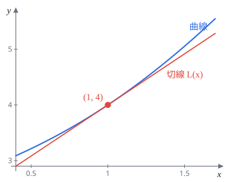
題 10平面曲線 $y^2=x^3+2xy+7$。(a) 求曲線在 $(1,4)$ 的切線 $L(x)$。(b) $P=(1.03,a)$ 在曲線上，用 $L(1.03)$ 估計 $a$。(c) 判斷是低估還是高估。（講義 (c) 的 $y''$ 有筆誤，見頁首。）
檢查點在曲線上：$16=1+8+7$。
(a) 兩邊對 $x$ 微分：
$$2y\,y'=3x^2+2y+2x\,y'\quad\Longrightarrow\quad y'=\frac{3x^2+2y}{2y-2x}$$代 $(1,4)$：$y'=\dfrac{3+8}{8-2}=\dfrac{11}{6}$，所以 $L(x)=4+\dfrac{11}{6}(x-1)$。
(b) $a\approx L(1.03)=4+\dfrac{11}{6}\cdot0.03=4.055$。
(c) 把 $2y\,y'=3x^2+2y+2x\,y'$ 再微一次：
$$2(y')^2+2y\,y''=6x+2y'+2y'+2x\,y''$$代 $x=1$、$y=4$、$y'=\frac{11}{6}$：
$$\begin{aligned} 2\cdot\frac{121}{36}+8y'' &= 6+\frac{44}{6}+2y'' \\ &\Longrightarrow 6y''=\frac{40}{3}-\frac{121}{18}=\frac{119}{18} \\ &\Longrightarrow y''=\frac{119}{108} \end{aligned}$$講義最後一步忘了除以 $6$，寫成 $\frac{119}{18}$。不過正負號不受影響，$y''\gt0$，凹口向上，切線在曲線下方。
(a) $L(x)=\dfrac{11}{6}(x-1)+4$；(b) $a\approx4.055$；(c) $y''=\dfrac{119}{108}\gt0$，低估
題 11(a) 求 $f(x)=\sin x$ 在 $x=\frac\pi3$ 的線性逼近，並估計 $\sin62^\circ$（提示：$62^\circ=\frac{31\pi}{90}$）。(b) 判斷是低估還是高估。（講義答案 $\sin62^\circ\approx\frac{\sqrt3}{2}+\frac{\pi}{180}\approx0.883$，高估）
(a) $f\!\left(\frac\pi3\right)=\frac{\sqrt3}{2}$，$f'\!\left(\frac\pi3\right)=\cos\frac\pi3=\frac12$，
$$L(x)=\frac{\sqrt3}{2}+\frac12\left(x-\frac\pi3\right)$$$62^\circ-60^\circ=2^\circ=\dfrac{2\pi}{180}=\dfrac{\pi}{90}$，所以
$$\begin{aligned} \sin62^\circ &\approx \frac{\sqrt3}{2}+\frac12\cdot\frac{\pi}{90} \\ &= \frac{\sqrt3}{2}+\frac{\pi}{180} \\ &\approx 0.86603+0.01745= 0.88348 \end{aligned}$$(b) $f''(x)=-\sin x$，$f''\!\left(\frac\pi3\right)=-\frac{\sqrt3}{2}\lt0$，凹口向下，切線在上方。實際值 $\sin62^\circ\approx0.88295$，確實比估計值小。
(a) $\sin62^\circ\approx\dfrac{\sqrt3}{2}+\dfrac{\pi}{180}\approx0.883$；(b) 高估，與講義答案相同
Fermat 定理的證明（不考）
講義證明了局部極大的情形。想法是看導數定義裡的差商 $\dfrac{f(c+h)-f(c)}{h}$：$c$ 是局部極大，所以 $h$ 夠小時分子 $f(c+h)-f(c)\le0$。
- $h\gt0$：差商 $\le0$，取 $h\to0^+$ 得 $f'(c)\le0$。
- $h\lt0$：負除負，差商 $\ge0$，取 $h\to0^-$ 得 $f'(c)\ge0$。
$f'(c)$ 存在，左右極限相等，兩個不等式同時成立，只能 $f'(c)=0$。
題 12證明 Fermat 定理在局部極小的情形：$f$ 在 $c$ 有局部極小且 $f'(c)$ 存在，則 $f'(c)=0$。
$c$ 是局部極小，所以 $h$ 夠接近 $0$ 時 $f(c)\le f(c+h)$，即 $f(c+h)-f(c)\ge0$。
情形 1：$h\gt0$ 且夠小，
$$\frac{f(c+h)-f(c)}{h}\ge0\ \Longrightarrow\ f'(c)=\lim_{h\to0^+}\frac{f(c+h)-f(c)}{h}\ge0$$情形 2：$h\lt0$ 且夠小，分子 $\ge0$、分母 $\lt0$，
$$\frac{f(c+h)-f(c)}{h}\le0\ \Longrightarrow\ f'(c)=\lim_{h\to0^-}\frac{f(c+h)-f(c)}{h}\le0$$兩邊都用到「$f'(c)$ 存在，所以等於單邊極限」。$f'(c)\ge0$ 且 $f'(c)\le0$，故 $f'(c)=0$。
另一種寫法：$c$ 是 $f$ 的局部極小，就是 $-f$ 的局部極大，套用已證的情形得 $-f'(c)=0$。
$f'(c)=0$ $\quad\blacksquare$
7.3 作圖流程 DISPADDD
每個字母是一個步驟，照順序做就不會漏：
解題套路 DISPADDD
- Domain 定義域：分母不能 $0$、根號內不能負、$\ln$ 內要正。
- Intercepts 截距：$x=0$ 求 $y$ 截距，$y=0$ 求 $x$ 截距（解不出來就跳過）。
- Symmetry 對稱：$f(-x)=f(x)$ 偶函數對稱 $y$ 軸；$f(-x)=-f(x)$ 奇函數對稱原點。也可能對稱別的直線，例如 $x=\frac12$。
- Period 週期：三角函數類，只要畫一個週期再複製。
- Asymptotes 漸近線：垂直漸近線看分母 $0$ 的地方 $f\to\pm\infty$；水平漸近線看 $\displaystyle\lim_{x\to\pm\infty}f$；斜漸近線 $y=mx+b$ 用 $m=\lim\frac{f(x)}{x}$、$b=\lim(f(x)-mx)$，有理函數直接做長除法。
- Derivative 一階導數：臨界點、遞增遞減區間、局部極值。
- Derivative 二階導數：凹性、反曲點。
- Draw 畫圖：把上面的結果整理成一張符號表，先畫漸近線、標特殊點，再依表格的升降與凹性連起來。
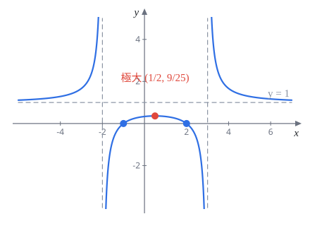
題 13$f(x)=\dfrac{x^2-x-2}{x^2-x-6}$，畫出 $y=f(x)$。
先因式分解並改寫：$f(x)=\dfrac{(x-2)(x+1)}{(x-3)(x+2)}=1+\dfrac{4}{x^2-x-6}$。後面這個形式微分比較快。
D：$x\neq3,\,-2$。
I：$f(0)=\frac13$；$x$ 截距 $x=2,\,-1$。
S：$x^2-x=\left(x-\frac12\right)^2-\frac14$，$f$ 只跟 $\left(x-\frac12\right)^2$ 有關，圖形對稱於直線 $x=\frac12$。
P：無。
A：垂直漸近線 $x=3$、$x=-2$；$\displaystyle\lim_{x\to\pm\infty}f(x)=1$，水平漸近線 $y=1$。$|x|$ 很大時 $\frac{4}{x^2-x-6}\gt0$，所以從上方貼近。
D：令 $u=x^2-x-6$，
$$f'(x)=-\frac{4(2x-1)}{(x^2-x-6)^2}$$$x\lt\frac12$（不含 $-2$）時 $f'\gt0$ 遞增，$x\gt\frac12$（不含 $3$）時遞減。局部極大 $f\!\left(\frac12\right)=1+\dfrac{4}{-25/4}=\dfrac{9}{25}$。
D：$f'=-4(2x-1)u^{-2}$ 再微一次，
$$\begin{aligned} f''(x) &= -8u^{-2}+8(2x-1)^2u^{-3} \\ &= \frac{8\bigl[(2x-1)^2-u\bigr]}{u^3} \\ &= \frac{8(3x^2-3x+7)}{(x^2-x-6)^3} \end{aligned}$$$3x^2-3x+7$ 判別式 $9-84\lt0$，恆正，所以 $f''$ 與 $u=(x-3)(x+2)$ 同號：$x\lt-2$ 或 $x\gt3$ 凹口向上，$-2\lt x\lt3$ 凹口向下。凹性只在漸近線兩側改變，沒有反曲點。
| 區間 | $(-\infty,-2)$ | $(-2,\frac12)$ | $(\frac12,3)$ | $(3,\infty)$ |
|---|---|---|---|---|
| $f'$ | $+$ 遞增 | $+$ 遞增 | $-$ 遞減 | $-$ 遞減 |
| $f''$ | $+$ 上凹 | $-$ 下凹 | $-$ 下凹 | $+$ 上凹 |
垂直漸近線 $x=-2,3$，水平漸近線 $y=1$；局部極大 $\left(\frac12,\frac{9}{25}\right)$；無反曲點；對稱於 $x=\frac12$
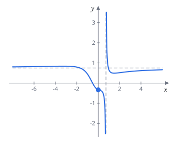
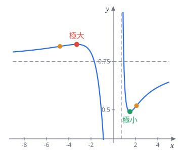
題 14畫出 $f(x)=\dfrac{3x^3-2x^2+1}{4x^3+2x-3}$ 的圖形。
這題分子分母都沒有好看的根，臨界點和反曲點只能用數值解，重點放在定性的形狀。
D：分母 $4x^3+2x-3$ 的導數 $12x^2+2\gt0$，嚴格遞增，只有一個實根 $x=a\approx0.728$。定義域 $x\neq a$。
I：$f(0)=-\frac13$；分子 $3x^3-2x^2+1=0$ 只有一個實根 $x\approx-0.528$。
S、P：無。
A：垂直漸近線 $x=a$。在 $a$ 附近分子約 $1.10\gt0$，所以 $x\to a^-$ 時 $f\to-\infty$，$x\to a^+$ 時 $f\to+\infty$。水平漸近線 $y=\frac34$（最高次係數比）。令 $f=\frac34$ 得 $8x^2+6x-13=0$，$x=\frac{-3\pm\sqrt{113}}{8}\approx0.954,\ -1.704$，圖形會穿過水平漸近線兩次。
D：
$$\begin{aligned} f'(x) &= \frac{(9x^2-4x)(4x^3+2x-3)-(3x^3-2x^2+1)(12x^2+2)}{(4x^3+2x-3)^2} \\ &= \frac{8x^4+12x^3-43x^2+12x-2}{(4x^3+2x-3)^2} \end{aligned}$$分子的實根約 $x\approx-3.283$ 與 $x\approx1.497$，兩根之外為正、之間為負。所以 $(-\infty,-3.283)$ 遞增，$(-3.283,a)$ 與 $(a,1.497)$ 遞減，$(1.497,\infty)$ 遞增。局部極大 $f(-3.283)\approx0.839$（略高於 $\frac34$），局部極小 $f(1.497)\approx0.491$（低於 $\frac34$）。
D：$f''$ 的分子是六次多項式 $-2(32x^6+72x^5-360x^4+156x^3+30x^2-117x+14)$，實根約 $-4.793,\ -0.627,\ 0.126,\ 2.092$。連同漸近線 $x=a$，凹性依序為：
| 區間 | $x\lt-4.79$ | $(-4.79,-0.63)$ | $(-0.63,0.13)$ | $(0.13,a)$ | $(a,2.09)$ | $x\gt2.09$ |
|---|---|---|---|---|---|---|
| $f''$ | 上凹 | 下凹 | 上凹 | 下凹 | 上凹 | 下凹 |
四個都是反曲點。畫圖時抓住：左邊從 $\frac34$ 下方出發，升到略高於 $\frac34$ 的極大後下降，經過 $(-0.528,0)$、$\left(0,-\frac13\right)$ 掉到 $-\infty$；右邊從 $+\infty$ 下來，穿過 $\frac34$ 降到極小 $0.491$，再慢慢從下方爬回 $\frac34$。
垂直漸近線 $x\approx0.728$，水平漸近線 $y=\frac34$；局部極大約 $(-3.28,\,0.839)$，局部極小約 $(1.50,\,0.491)$；反曲點 $x\approx-4.79,-0.63,0.13,2.09$
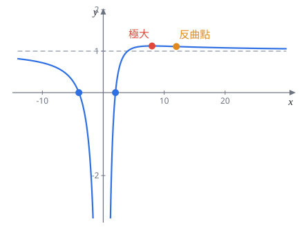
題 15$f(x)=1+\dfrac2x-\dfrac{8}{x^2}$，畫出 $y=f(x)$。
D：$x\neq0$。
I：沒有 $y$ 截距。通分 $f(x)=\dfrac{x^2+2x-8}{x^2}=\dfrac{(x+4)(x-2)}{x^2}$，$x$ 截距 $-4,\,2$。
S、P：無。
A：$x\to0$ 時 $-\frac{8}{x^2}$ 主導，兩側都 $f\to-\infty$，垂直漸近線 $x=0$。水平漸近線 $y=1$。$f=1\iff\frac2x=\frac{8}{x^2}\iff x=4$，在 $(4,1)$ 穿過漸近線。
D：
$$f'(x)=-\frac{2}{x^2}+\frac{16}{x^3}=\frac{2(8-x)}{x^3}$$$0\lt x\lt8$ 時 $f'\gt0$，$x\lt0$ 或 $x\gt8$ 時 $f'\lt0$。局部極大 $f(8)=1+\frac14-\frac18=\frac98$。
D：
$$f''(x)=\frac{4}{x^3}-\frac{48}{x^4}=\frac{4(x-12)}{x^4}$$$x^4\gt0$，所以 $x\lt12$（$x\neq0$）凹口向下，$x\gt12$ 凹口向上。反曲點 $f(12)=1+\frac16-\frac{8}{144}=\frac{10}{9}$。
| 區間 | $(-\infty,0)$ | $(0,8)$ | $(8,12)$ | $(12,\infty)$ |
|---|---|---|---|---|
| $f'$ | $-$ 遞減 | $+$ 遞增 | $-$ 遞減 | $-$ 遞減 |
| $f''$ | $-$ 下凹 | $-$ 下凹 | $-$ 下凹 | $+$ 上凹 |
$x\to-\infty$ 時 $\frac2x\lt0$ 主導，從下方貼近 $y=1$；$x\to+\infty$ 時從上方貼近。
垂直漸近線 $x=0$，水平漸近線 $y=1$；局部極大 $\left(8,\frac98\right)$；反曲點 $\left(12,\frac{10}{9}\right)$
題 16已知 $f'(x)=\sqrt[3]{x(9+x)(9-x)}$。(a) 求 $f$ 的臨界點。(b) 求 $f$ 遞減的區間。(c) 求 $f$ 的反曲點與凹口向上的區間。
這題只給 $f'$，所以只能回答 $x$ 座標。立方根對負數也有定義，$f'$ 的正負跟根號裡面 $g(x)=x(9+x)(9-x)=81x-x^3$ 一樣。
(a) $f'$ 處處有定義，$f'=0\iff x=0,\,\pm9$。
(b) $g(x)=-x(x+9)(x-9)$，分界點 $-9,0,9$。$x$ 很大時 $-x^3$ 主導為負，往左交替：
| 區間 | $x\lt-9$ | $(-9,0)$ | $(0,9)$ | $x\gt9$ |
|---|---|---|---|---|
| $f'$ | $+$ | $-$ | $+$ | $-$ |
(c) 用連鎖律，$x\neq0,\pm9$ 時
$$f''(x)=\frac13\bigl(81x-x^3\bigr)^{-2/3}\bigl(81-3x^2\bigr)=\frac{81-3x^2}{3\sqrt[3]{(81x-x^3)^2}}$$分母恆正，$f''$ 與 $81-3x^2$ 同號：$|x|\lt\sqrt{27}=3\sqrt3$ 為正，$|x|\gt3\sqrt3$ 為負。
注意 $x=0,\pm9$ 處 $f''$ 不存在（$f'$ 在那裡有垂直切線），但兩側 $f''$ 同號，凹性沒變，不是反曲點。$x=\pm3\sqrt3$ 兩側變號，是反曲點。
(a) $x=-9,0,9$；(b) $(-9,0)$ 與 $(9,\infty)$；(c) 反曲點 $x=\pm3\sqrt3$，凹口向上區間 $\left(-3\sqrt3,\,3\sqrt3\right)$
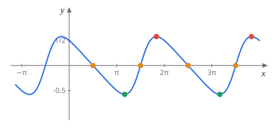
題 17畫出 $y=f(x)=\dfrac{\cos x}{2+\sin x}$ 的圖形。（講義解答的凹性區間有筆誤，見頁首。）
D：$2+\sin x\ge1$，定義域 $\mathbb R$。
I：$f(0)=\frac12$；$f=0\iff\cos x=0$，在 $[0,2\pi]$ 是 $x=\frac\pi2,\frac{3\pi}2$。
S：無。
P：週期 $2\pi$，只看 $[0,2\pi]$。
A：分母不為 $0$，值有界，無漸近線。
D：商法則，
$$\begin{aligned} f'(x) &= \frac{-\sin x(2+\sin x)-\cos^2x}{(2+\sin x)^2} \\ &= \frac{-2\sin x-(\sin^2x+\cos^2x)}{(2+\sin x)^2} \\ &= -\frac{2\sin x+1}{(2+\sin x)^2} \end{aligned}$$$f'\gt0\iff\sin x\lt-\frac12\iff\frac{7\pi}{6}\lt x\lt\frac{11\pi}{6}$。所以 $f$ 在 $\left(\frac{7\pi}6,\frac{11\pi}6\right)$ 遞增，在 $\left(0,\frac{7\pi}6\right)$ 與 $\left(\frac{11\pi}6,2\pi\right)$ 遞減。
$$f\!\left(\tfrac{7\pi}{6}\right)=\frac{-\frac{\sqrt3}2}{2-\frac12}=-\frac{\sqrt3}{3},\qquad f\!\left(\tfrac{11\pi}{6}\right)=\frac{\sqrt3}{3}$$D：令 $s=\sin x$、$c=\cos x$，$f'=-(2s+1)(2+s)^{-2}$，
$$\begin{aligned} f''(x) &= \frac{-2c(2+s)+2c(2s+1)}{(2+s)^3} \\ &= \frac{2c(s-1)}{(2+s)^3} \\ &= -\frac{2\cos x\,(1-\sin x)}{(2+\sin x)^3} \end{aligned}$$$(2+\sin x)^3\gt0$，$1-\sin x\ge0$（只在 $x=\frac\pi2$ 為 $0$），所以 $f''\gt0\iff\cos x\lt0\iff\frac\pi2\lt x\lt\frac{3\pi}{2}$。講義這裡寫成 $\frac{2\pi}{3}$ 是筆誤，從它自己的表格（$\frac\pi2$ 到 $\frac{3\pi}2$ 的兩格 $f''$ 都是正）也看得出來。
凹口向上 $\left(\frac\pi2,\frac{3\pi}2\right)$，凹口向下 $\left(0,\frac\pi2\right)$ 與 $\left(\frac{3\pi}2,2\pi\right)$，反曲點 $\left(\frac\pi2,0\right)$、$\left(\frac{3\pi}2,0\right)$。$f''\!\left(\frac{7\pi}6\right)\gt0$ 是局部極小，$f''\!\left(\frac{11\pi}6\right)\lt0$ 是局部極大。
| 區間 | $(0,\frac\pi2)$ | $(\frac\pi2,\frac{7\pi}6)$ | $(\frac{7\pi}6,\frac{3\pi}2)$ | $(\frac{3\pi}2,\frac{11\pi}6)$ | $(\frac{11\pi}6,2\pi)$ |
|---|---|---|---|---|---|
| $f'$ | $-$ | $-$ | $+$ | $+$ | $-$ |
| $f''$ | $-$ | $+$ | $+$ | $-$ | $-$ |
週期 $2\pi$；局部極小 $\left(\frac{7\pi}6,-\frac{\sqrt3}3\right)$，局部極大 $\left(\frac{11\pi}6,\frac{\sqrt3}3\right)$；反曲點 $\left(\frac\pi2,0\right)$、$\left(\frac{3\pi}2,0\right)$；上凹 $\left(\frac\pi2,\frac{3\pi}2\right)$
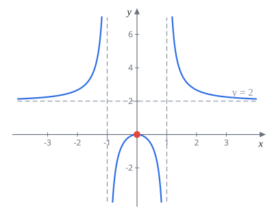
題 18$f(x)=\dfrac{2x^2}{x^2-1}$，畫出 $y=f(x)$。
改寫 $f(x)=2+\dfrac{2}{x^2-1}$。
D：$x\neq\pm1$。I：只有原點 $(0,0)$。S：偶函數，對稱 $y$ 軸。P：無。
A：垂直漸近線 $x=\pm1$；水平漸近線 $y=2$，$|x|\gt1$ 時 $\frac{2}{x^2-1}\gt0$，從上方貼近。
D：$f'(x)=-\dfrac{4x}{(x^2-1)^2}$。$x\lt0$ 遞增、$x\gt0$ 遞減（都扣掉 $\pm1$），$x=0$ 是局部極大，$f(0)=0$。
D：
$$\begin{aligned} f''(x) &= -4\cdot\frac{(x^2-1)^2-x\cdot2(x^2-1)\cdot2x}{(x^2-1)^4} \\ &= -4\cdot\frac{(x^2-1)-4x^2}{(x^2-1)^3} \\ &= \frac{4(3x^2+1)}{(x^2-1)^3} \end{aligned}$$與 $x^2-1$ 同號：$|x|\gt1$ 凹口向上，$|x|\lt1$ 凹口向下。凹性只在漸近線改變，無反曲點。
垂直漸近線 $x=\pm1$，水平漸近線 $y=2$；局部極大 $(0,0)$；無反曲點；上凹 $|x|\gt1$，下凹 $(-1,1)$
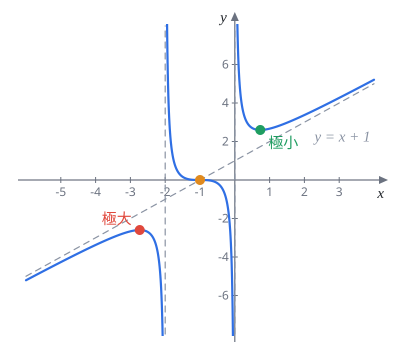
題 19$f(x)=\dfrac{(x+1)^3}{x^2+2x}$，畫出 $y=f(x)$。
觀察到 $x^2+2x=(x+1)^2-1$，令 $t=x+1$，函數變成
$$f=\frac{t^3}{t^2-1}=t+\frac{t}{t^2-1}$$它是 $t$ 的奇函數，所以圖形對稱於 $t=0$、$y=0$，也就是點 $(-1,0)$。以下都用 $t$ 算，最後再換回 $x=t-1$。
D：$t\neq\pm1$，即 $x\neq0,\,-2$。
I：$x=0$ 不在定義域，沒有 $y$ 截距；$f=0\iff t=0$，$x$ 截距 $x=-1$。
A：垂直漸近線 $x=0$、$x=-2$。$\frac{t}{t^2-1}\to0$，斜漸近線 $y=t=x+1$。
D：
$$\frac{df}{dt}=\frac{3t^2(t^2-1)-t^3\cdot2t}{(t^2-1)^2}=\frac{t^2(t^2-3)}{(t^2-1)^2}$$$|t|\gt\sqrt3$ 為正，$|t|\lt\sqrt3$（$t\neq0,\pm1$）為負。$t=-\sqrt3$ 由正變負是局部極大，$f=\frac{-3\sqrt3}{2}$；$t=\sqrt3$ 是局部極小，$f=\frac{3\sqrt3}2$。$t=0$ 雖然 $f'=0$，但兩側都是負，不是極值。
D：$\frac{t}{t^2-1}$ 的二階導數題 8 已經算過，$t$ 的一階導數是常數，
$$\frac{d^2f}{dt^2}=\frac{2t(t^2+3)}{(t^2-1)^3}$$依題 8 的表：$-1\lt t\lt0$ 或 $t\gt1$ 凹口向上，$t\lt-1$ 或 $0\lt t\lt1$ 凹口向下，$t=0$ 是反曲點（而且切線水平）。
換回 $x$：
| 區間 | $x\lt-1-\sqrt3$ | $(-1-\sqrt3,-2)$ | $(-2,-1)$ | $(-1,0)$ | $(0,-1+\sqrt3)$ | $x\gt-1+\sqrt3$ |
|---|---|---|---|---|---|---|
| $f'$ | $+$ | $-$ | $-$ | $-$ | $-$ | $+$ |
| $f''$ | $-$ | $-$ | $+$ | $-$ | $+$ | $+$ |
垂直漸近線 $x=-2,0$，斜漸近線 $y=x+1$；局部極大 $\left(-1-\sqrt3,-\frac{3\sqrt3}2\right)$，局部極小 $\left(-1+\sqrt3,\frac{3\sqrt3}2\right)$；反曲點 $(-1,0)$
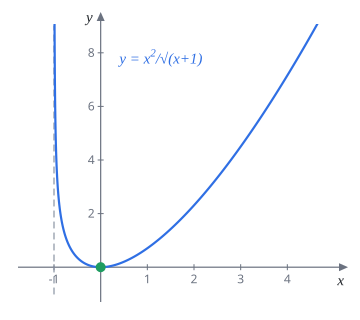
題 20$f(x)=\dfrac{x^2}{\sqrt{x+1}}$，畫出 $y=f(x)$。
D：$x+1\gt0$，即 $x\gt-1$。I：$(0,0)$。S、P：無。
A：$x\to-1^+$ 時分子 $\to1$、分母 $\to0^+$，$f\to+\infty$，垂直漸近線 $x=-1$。$x\to\infty$ 時 $f\approx x^{3/2}$，長得比任何直線快，沒有水平或斜漸近線。
D：寫成 $f=x^2(x+1)^{-1/2}$，
$$\begin{aligned} f'(x) &= 2x(x+1)^{-1/2}-\frac12x^2(x+1)^{-3/2} \\ &= \frac{4x(x+1)-x^2}{2(x+1)^{3/2}} \\ &= \frac{x(3x+4)}{2(x+1)^{3/2}} \end{aligned}$$定義域內 $3x+4\gt0$，所以 $f'$ 與 $x$ 同號：$(-1,0)$ 遞減，$(0,\infty)$ 遞增，$x=0$ 是局部（也是全域）極小，$f(0)=0$。
D：$f'=\frac12(3x^2+4x)(x+1)^{-3/2}$，
$$\begin{aligned} f''(x) &= \frac12(6x+4)(x+1)^{-3/2}-\frac34(3x^2+4x)(x+1)^{-5/2} \\ &= \frac{4(3x+2)(x+1)-3(3x^2+4x)}{4(x+1)^{5/2}} \\ &= \frac{3x^2+8x+8}{4(x+1)^{5/2}} \end{aligned}$$$3x^2+8x+8$ 判別式 $64-96\lt0$，恆正。整個定義域凹口向上，沒有反曲點。
定義域 $x\gt-1$，垂直漸近線 $x=-1$；最小值 $(0,0)$；處處凹口向上，無反曲點
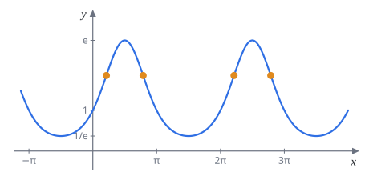
題 21$f(x)=e^{\sin x}$，畫出 $y=f(x)$。
D：$\mathbb R$。I：$f(0)=1$；$e^{(\cdot)}\gt0$，沒有 $x$ 截距。S：無。P：週期 $2\pi$，看 $[0,2\pi]$。A：$\frac1e\le f\le e$，無漸近線。
D：$f'(x)=\cos x\,e^{\sin x}$，與 $\cos x$ 同號。$\left(0,\frac\pi2\right)$、$\left(\frac{3\pi}2,2\pi\right)$ 遞增，$\left(\frac\pi2,\frac{3\pi}2\right)$ 遞減。最大值 $f\!\left(\frac\pi2\right)=e$，最小值 $f\!\left(\frac{3\pi}2\right)=\frac1e$。
D：積法則，
$$f''(x)=-\sin x\,e^{\sin x}+\cos^2x\,e^{\sin x}=e^{\sin x}\bigl(1-\sin x-\sin^2x\bigr)$$令 $s=\sin x$，$1-s-s^2=0$ 得 $s=\frac{-1\pm\sqrt5}{2}$，其中 $\frac{-1-\sqrt5}{2}\lt-1$ 不可能。記 $\alpha=\sin^{-1}\frac{\sqrt5-1}{2}\approx0.666$。$1-s-s^2$ 是開口向下的拋物線，$s\lt\frac{\sqrt5-1}{2}$ 時為正。在 $[0,2\pi]$ 中 $\sin x\gt\frac{\sqrt5-1}2$ 的是 $(\alpha,\pi-\alpha)$。
凹口向下 $(\alpha,\pi-\alpha)$，凹口向上 $(0,\alpha)\cup(\pi-\alpha,2\pi)$。反曲點在 $x=\alpha\approx0.666$ 與 $x=\pi-\alpha\approx2.475$，$y=e^{(\sqrt5-1)/2}\approx1.855$。
有趣的是 $\sin x=\frac{\sqrt5-1}{2}\approx0.618$ 正好是黃金比例的倒數。另外最低點 $\frac{3\pi}2$ 附近整段都凹口向上，所以波谷比波峰寬，跟正弦波不一樣。
週期 $2\pi$；最大 $\left(\frac\pi2,e\right)$，最小 $\left(\frac{3\pi}2,\frac1e\right)$；反曲點 $x=\alpha,\ \pi-\alpha$，$\alpha=\sin^{-1}\frac{\sqrt5-1}2\approx0.666$
7.3.1 隱函數作圖（*）
方程式解不出 $y=f(x)$ 時也能作圖，做法是把曲線切成幾段，每段把 $y$ 當成 $x$ 的函數，照樣用 DISPADDD。對稱性在這裡特別好用：
- $(x,y)$ 換成 $(x,-y)$ 方程式不變：對稱 $x$ 軸，只畫上半部。
- $(x,y)$ 換成 $(y,x)$ 方程式不變：對稱直線 $y=x$。
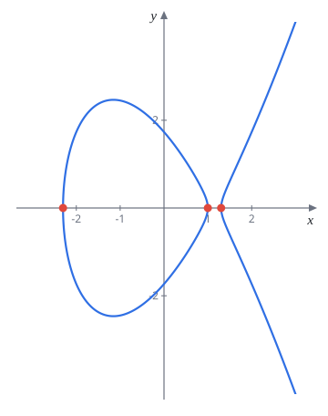
題 22畫出 $y^2=x^3-4x+3$。
講義只說對稱 $x$ 軸、畫 $y=\sqrt{g(x)}$，$g(x)=x^3-4x+3$，細節省略。這裡補上。
D：要 $g(x)\ge0$。$g(1)=0$，因式分解 $g(x)=(x-1)(x^2+x-3)$，三根 $x=\frac{-1-\sqrt{13}}2\approx-2.303$、$1$、$\frac{-1+\sqrt{13}}2\approx1.303$。三次項係數正，所以 $g\ge0$ 在 $[-2.303,\,1]\cup[1.303,\,\infty)$。曲線分成兩塊。
I：$x$ 截距就是上面三根；$y$ 截距 $y=\pm\sqrt3$。
S：對稱 $x$ 軸。
D：上半部 $y=\sqrt{g}$，$y'=\dfrac{g'(x)}{2\sqrt{g(x)}}=\dfrac{3x^2-4}{2y}$。在三個 $x$ 截距 $g'\neq0$、$y=0$，切線垂直。$g'=0$ 在 $x=\pm\frac{2}{\sqrt3}$：
- $x=-\frac2{\sqrt3}\approx-1.155$ 在左邊那塊，是卵形的最高點，$y=\sqrt{3+\frac{16\sqrt3}{9}}\approx2.466$。
- $x=\frac2{\sqrt3}\approx1.155$ 落在 $g\lt0$ 的空隙裡，不在曲線上。右邊那塊上半部一路遞增。
D：$y''=\dfrac{2g\,g''-(g')^2}{4g^{3/2}}$，分子 $2(x^3-4x+3)(6x)-(3x^2-4)^2=3x^4-24x^2+36x-16$。在右邊那塊它只有一個根 $x\approx1.620$：之前為負（凹口向下），之後為正（凹口向上），是反曲點，約 $(1.620,\pm0.879)$。左邊卵形的上半部整段凹口向下。
左邊封閉卵形 $-2.303\le x\le1$（最高點約 $(-1.155,\pm2.466)$），右邊無界分支 $x\ge1.303$（反曲點約 $x\approx1.62$）；對稱 $x$ 軸
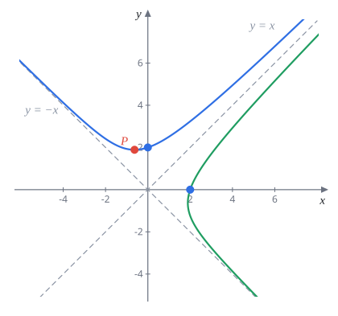
題 23畫出 $x^3+y^3-x^2y-xy^2=8$。（講義求 $\frac{dy}{dx}$ 時的理由有誤，見頁首。）
講義直接硬做。先因式分解會清楚很多：
$$\begin{aligned} x^3+y^3-xy(x+y) &= (x+y)(x^2-xy+y^2)-xy(x+y) \\ &= (x+y)(x-y)^2= 8 \end{aligned}$$由此馬上看出：$(x-y)^2\ge0$，所以 $x+y\gt0$，且 $x\neq y$。
I：$x=0$ 得 $y^3=8$，$y=2$；同理 $(2,0)$。
S：$x,y$ 互換方程式不變，對稱 $y=x$。曲線被 $y=x$ 切成兩支（$x\neq y$），只看 $y\gt x$ 那支。這支同時有 $y\gt x$、$y\gt-x$，所以 $y\gt|x|\ge0$，整支在 $x$ 軸上方。
A：講義用反證法說明沒有垂直、水平漸近線，並證明斜漸近線是 $y=\pm x$。用因式分解的形式更直接：沿著曲線 $|x|\to\infty$ 時，若 $x-y$ 也趨向無窮，則 $x+y=\dfrac{8}{(x-y)^2}\to0$，貼近 $y=-x$；若 $x+y\to\infty$，則 $(x-y)^2=\dfrac{8}{x+y}\to0$，貼近 $y=x$。所以漸近線是 $y=x$ 與 $y=-x$。
D：對 $(x+y)(x-y)^2=8$ 兩邊微分，
$$(1+y')(x-y)^2+2(x+y)(x-y)(1-y')=0$$曲線上 $x\neq y$，兩邊除以 $(x-y)$（講義括號說消掉 $x+y$，是寫錯了）：
$$(1+y')(x-y)+2(x+y)(1-y')=0\ \Longrightarrow\ \frac{dy}{dx}=\frac{3x+y}{3y+x}$$在 $y\gt|x|$ 這支上，$3y+x\gt0$，所以 $y'$ 的正負看 $3x+y$。$y'=0\iff y=-3x$，代回方程式 $(-2x)(4x)^2=-32x^3=8$，$x^3=-\frac14$：
$$P\left(-\frac{1}{2^{2/3}},\ \frac{3}{2^{2/3}}\right)\approx(-0.630,\ 1.890)$$$-x\lt y\lt-3x$（$P$ 的左邊）$y'\lt0$，$y\gt-3x$（$P$ 的右邊）$y'\gt0$，$P$ 是最低點。
D：$y'=\frac{3x+y}{3y+x}$ 再微一次並代回 $y'$，
$$\begin{aligned} \frac{d^2y}{dx^2} &= \frac{(3+y')(3y+x)-(3x+y)(3y'+1)}{(3y+x)^2} \\ &= \frac{8y-8xy'}{(3y+x)^2} \\ &= \frac{24(y+x)(y-x)}{(3y+x)^3} \end{aligned}$$這支上 $y+x\gt0$、$y-x\gt0$、$3y+x\gt0$，所以 $y''\gt0$，整支凹口向上。
D：從左上方貼著 $y=-x$ 下來，經過 $(0,2)$ 前先到最低點 $P$，再往右上貼近 $y=x$。另一支是它對 $y=x$ 的鏡像。
換成旋轉 $45^\circ$ 的座標 $u=\frac{x+y}{\sqrt2}$、$v=\frac{x-y}{\sqrt2}$，方程式變成 $u\,v^2=2\sqrt2$，也就是 $u=\frac{2\sqrt2}{v^2}$，跟 $y=\frac{1}{x^2}$ 是同一種形狀，只是轉了 $45^\circ$。
漸近線 $y=\pm x$；對稱 $y=x$ 的兩支；$y\gt x$ 那支最低點 $P\left(-2^{-2/3},\,3\cdot2^{-2/3}\right)$，處處凹口向上
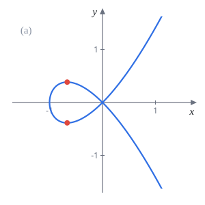
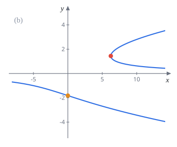
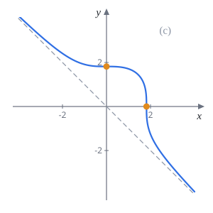
題 24畫出下列隱函數：(a) $y^2=x^2(x+1)$ (b) $-xy+y^3=-6$ (c) $x^3+y^3=6$
(a) 對稱 $x$ 軸。開根號得 $y=\pm|x|\sqrt{x+1}$，也就是 $y=x\sqrt{x+1}$ 與 $y=-x\sqrt{x+1}$ 兩條合起來。先畫 $h(x)=x\sqrt{x+1}$ 這一條，再對 $x$ 軸鏡射。注意 $h$ 不是上半部：$-1\lt x\lt0$ 時 $h\lt0$。
- 定義域 $x\ge-1$；截距 $(-1,0)$、$(0,0)$。
- $h(x)=x\sqrt{x+1}$，$h'(x)=\sqrt{x+1}+\dfrac{x}{2\sqrt{x+1}}=\dfrac{3x+2}{2\sqrt{x+1}}$。$x=-\frac23$ 是最低點 $h=-\frac{2\sqrt3}{9}\approx-0.385$；$x\to-1^+$ 時 $h'\to-\infty$，在 $(-1,0)$ 切線垂直。
- $h''(x)=\dfrac{3x+4}{4(x+1)^{3/2}}\gt0$，凹口向上。
- 原點處 $h'(0)=1$，鏡像那條斜率 $-1$：曲線在原點以斜率 $\pm1$ 自己交叉。
形狀：$-1\le x\le0$ 是一個水滴形的圈（上下最寬在 $x=-\frac23$），過原點交叉後兩條往右上、右下張開。
(b) 這題 $y$ 解不出來，但 $x$ 可以：$x\,y=y^3+6$，$y\neq0$，
$$x=y^2+\frac6y$$把它當成「$x$ 是 $y$ 的函數」來畫，等於把平常的圖轉個方向看。
- $y\neq0$：曲線不碰 $x$ 軸。$y\to0^+$ 時 $x\to+\infty$，$y\to0^-$ 時 $x\to-\infty$，所以 $y=0$ 是水平漸近線。
- $\dfrac{dx}{dy}=2y-\dfrac{6}{y^2}$。$y\gt0$ 時在 $y^3=3$ 變號：$y=3^{1/3}\approx1.442$，$x=3^{2/3}+2\cdot3^{2/3}=3^{5/3}\approx6.24$，這是上面那支最左邊的點，切線垂直。$y\lt0$ 時 $\frac{dx}{dy}\lt0$ 恆成立，下面那支 $y$ 隨 $x$ 單調遞減。
- $\dfrac{d^2x}{dy^2}=2+\dfrac{12}{y^3}$。$y\gt0$ 恆正，上支像往右開口的拋物線；$y\lt0$ 在 $y^3=-6$ 變號，$y=-\sqrt[3]6$，此時 $x=6^{2/3}-6^{2/3}=0$，反曲點剛好就是 $y$ 截距 $(0,-\sqrt[3]6)$。
- $y\to\pm\infty$ 時 $x\approx y^2$，兩支都往右延伸，像 $x=y^2$。
形狀：上支是從 $y=0$ 上方、$x=+\infty$ 處繞過 $(6.24,1.44)$ 再往右上去的 C 字形；下支從左邊貼著 $y=0$ 下方出發，經過 $(0,-1.817)$ 一路往右下。
(c) $y=\sqrt[3]{6-x^3}$，定義域 $\mathbb R$，對稱 $y=x$。
- 截距 $(0,\sqrt[3]6)$、$(\sqrt[3]6,0)$，$\sqrt[3]6\approx1.817$。
- 漸近線：$x+y=\dfrac{6}{x^2-xy+y^2}\to0$，所以 $y=-x$ 是斜漸近線。
- $3x^2+3y^2y'=0$，$y'=-\dfrac{x^2}{y^2}\le0$，整條遞減。$x=0$ 時切線水平，$y=0$ 時切線垂直。
- $y''=-\dfrac{2xy^2-x^2\cdot2yy'}{y^4}=-\dfrac{2x(y^3+x^3)}{y^5}=-\dfrac{12x}{y^5}$。$x$ 與 $y$ 異號時 $y''\gt0$：$x\lt0$（此時 $y\gt0$）與 $x\gt\sqrt[3]6$（此時 $y\lt0$）凹口向上，$0\lt x\lt\sqrt[3]6$ 凹口向下。兩個截距都是反曲點。
(a) 原點自交、左側有圈；(b) $y=0$ 為漸近線，上支最左點 $(3^{5/3},3^{1/3})$，下支反曲點 $(0,-\sqrt[3]6)$；(c) 遞減，漸近線 $y=-x$，反曲點 $(0,\sqrt[3]6)$、$(\sqrt[3]6,0)$
7.4 一維梯度下降（*）
函數太複雜時解不出 $f'=0$，機器學習的做法是：從一個猜測 $x_0$ 出發，一步一步往低處走。$f'(x_n)\gt0$ 代表往右是上坡，就往左走；$f'(x_n)\lt0$ 就往右走。也就是永遠往 $f'$ 的反方向移動，移動量跟斜率成正比：
$$x_{n+1}=x_n-t\,f'(x_n)$$$t$ 叫 learning rate（學習率），控制步伐大小。講義寫「向 $f'(x_n)$ 的方向走 $t$ 單位」是筆誤，公式本身是對的。
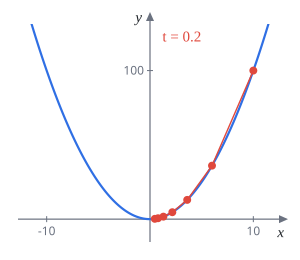
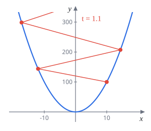
題 25$f(x)=x^2$，$x_0=10$。用不同的 $t$ 逼近 $f$ 的最小值，求 $x_1,x_2,\ldots,x_9$：(a) $t=0.2$ (b) $t=0.05$（太小） (c) $t=1.1$（太大）
$f'(x)=2x$，所以 $x_{n+1}=x_n-2t\,x_n=(1-2t)\,x_n$，是公比 $r=1-2t$ 的等比數列，$x_n=10\,r^n$。
- (a) $r=0.6$：$x_n=10(0.6)^n\to0$。
- (b) $r=0.9$：$x_n=10(0.9)^n\to0$，但比 (a) 慢很多。
- (c) $r=-1.2$：$|r|\gt1$，$x_n=10(-1.2)^n$ 正負交錯且絕對值變大，發散。
| $n$ | (a) $t=0.2$ | (b) $t=0.05$ | (c) $t=1.1$ |
|---|---|---|---|
| 1 | 6 | 9 | $-12$ |
| 2 | 3.6 | 8.1 | 14.4 |
| 3 | 2.16 | 7.29 | $-17.28$ |
| 4 | 1.296 | 6.561 | 20.736 |
| 5 | 0.7776 | 5.9049 | $-24.8832$ |
| 6 | 0.4666 | 5.3144 | 29.8598 |
| 7 | 0.2799 | 4.7830 | $-35.8318$ |
| 8 | 0.1680 | 4.3047 | 42.9982 |
| 9 | 0.1008 | 3.8742 | $-51.5978$ |
(c) 的問題出在一步跨太大：在 $x=10$ 斜率是 $20$，走 $1.1\times20=22$ 單位，直接衝到谷底另一邊更高的地方。收斂的條件是 $|1-2t|\lt1$，即 $0\lt t\lt1$。
$x_n=10(1-2t)^n$：(a) $10(0.6)^n\to0$；(b) $10(0.9)^n\to0$ 較慢；(c) $10(-1.2)^n$ 發散
實務上學習率可以每一步調整（例如參考前幾步的 $x_n$），讓收斂更快。另外梯度下降只會找到局部極小，函數有好幾個谷時，掉進哪一個要看起點，想找全域最小值需要其他技巧。
本週必背總整理
- 臨界點：$f'(c)=0$ 或 $f'(c)$ 不存在。極值只會在臨界點，但臨界點不一定是極值（$x^3$），要看 $f'$ 變號
- 閉區間最大最小值：臨界點與端點全部代入比大小，端點不能漏
- 凹性：$f''\gt0$ 凹口向上（切線在下方），$f''\lt0$ 凹口向下；反曲點要 $f''$ 變號且在定義域內（$x^4$ 不是）
- 二階判別：$f'(c)=0$ 且 $f''(c)\lt0$ 是極大，$f''(c)\gt0$ 是極小
- 線性逼近：$f''(a)\gt0$ 低估、$f''(a)\lt0$ 高估
- DISPADDD：定義域、截距、對稱、週期、漸近線、$f'$、$f''$、畫圖；最後整理成符號表
- 隱函數作圖：先找對稱與因式分解；$y$ 解不出來就試著把 $x$ 寫成 $y$ 的函數
- 梯度下降：$x_{n+1}=x_n-tf'(x_n)$，往斜率反方向走；$t$ 太小慢，太大發散